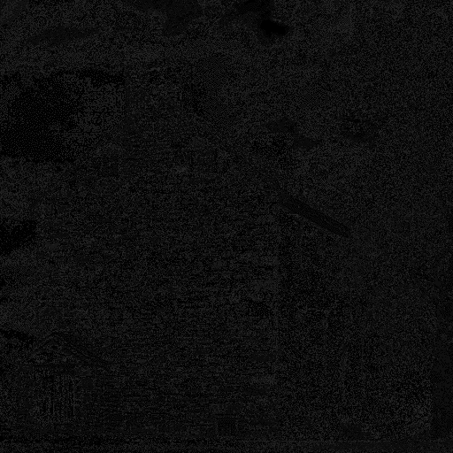
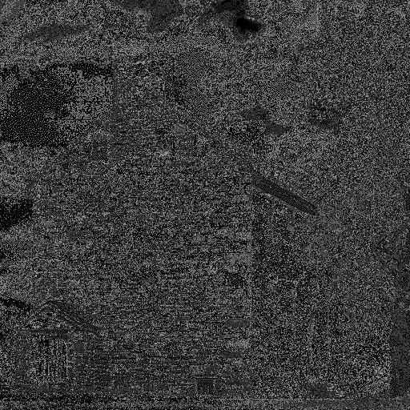
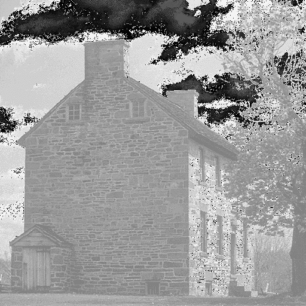
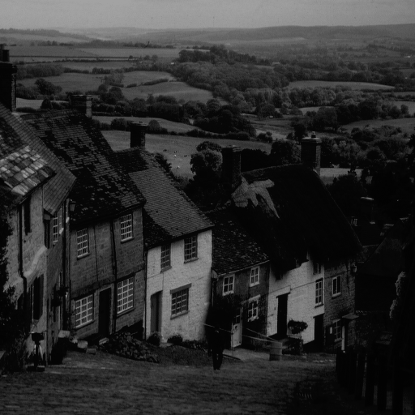

Victor Palmerini
178061
01/04/2020
Este é o Trabalho 1 da disciplina MC920 - Introdução ao Processamento de Imagens Digitais da Unicamp - Universidade Estadual de Campinas.
O principal objetivo deste trabalho é desenvolver uma boa noção sobre alguns dos mais básicos processamentos de imagens digitais como: manipulação da resolução, quantização e escala de cinza.
O trabalho requer por parte do aluno um conhecimento básico da linguagem de programação python e bibliotecas que facilitem a manipulação das imagens digitais bem como seus processamentos. No caso deste trabalho, foram usados os pacotes numpy, pillow e jupyter notebook. Estes pacotes serão mencionados com mais detalhes no decorrer do relatório.
/notebooks - é a pasta que contém os notebooks com os algoritmos para serem executados pelo jupyter notebook
requirements.txt - é um arquivo texto que contém as dependências para executar a aplicação (foi gerado pelo pacote pip através do comando pip freeze > requirements.txt)
Pipfile e Pipfile.lock - são os arquivos relacionados ao ambiente virtual aonde as dependências são instaladas e executadas. Isso permite que as dependências sejam instaladas apenas no ambiente virtual e não no ambiente local.
/images - pasta com algumas imagens usadas como entrada para execução dos notebooks
Para executar os notebooks é necessário instalar as seguintes dependências:
Python 3 - neste projeto foi usada a versão 3.7.3. Qualquer versão do python a partir da 3 é suficiente.
Pipenv - gerenciador de ambientes virtuais. É equivalente ao virtualenv.
Na pasta root do projeto, execute os seguintes comandos em uma shell:
pipenv shell - para iniciar um ambiente virtual localmente
pipenv install -r requirements.txt - instala no ambiente virtual todas as dependências listadas no arquivo requirements.txt
Para executar os notebooks, há 2 caminhos:
Executar jupyter notebook em uma shell para subir um servidor do jupyterlab que vai abrir automaticamente o navegador padrão com o ambiente jupyter e as pastas e arquivos do projeto.
Caso o projeto tenha sido aberto no Visual Studio Code, é possível subir o servidor do jupyterlab executando a task Start Notebook. Uma outra opção é instalar a extensão VS Code Jupyter Notebook, que permite executar os notebooks no próprio VS Code.
As entradas dos notebooks serão o path da imagem de entrada, o path da pasta de saída e algum ou alguns outros parâmetros necessários para a execução do processamento. As imagens de entrada utilizadas são monocromáticas, no formato .png e com 256 níveis de intensidade. Como foi falado, na pasta /images há algumas imagens que podem ser usadas como entrada.
As saídas também serão imagens monocromáticas, no formato .png e com um número de níveis de intensidade que pode ser diferente de 256 dependendo do processamento aplicado. Alguns notebooks irão gerar mais de uma imagem como saída. Isto será especificado no momento de execução do notebook.
Este processamento, implementado no notebook resolution.ipynb, consiste em diminuir a densidade de pixels numa imagem digital. Isto pode ser feito diminuindo o número de pixels de uma imagem mas mantendo as suas dimensões, dessa forma o número de pixels por unidade de espaço diminui.
Em termos de implementação, este processamento consiste em transformar cada bloco de 4 pixels da matriz que representa a imagem em blocos de 1 pixel. O método mais comum consiste em obter a média aritmética dos 4 valores de intensidade de cada pixel e atribuir pro pixel resultante. Após isso, a matriz resultante terá a metade da altura e a metade da largura, portanto terá 4x menos elementos. Como o tamanho da imagem deve ser preservado, basta redimensionar a matriz para o tamanho original.
Explicando o código com o algoritmo citado em mais detalhes:
Primeiro obtém-se as entradas:
path da imagem de entrada (ex: ../images/city.png)path da pasta de saída (este notebook pode gerar várias imagens de saída) - (ex: ../outputs, a pasta /outputs deve existir)Supondo que se quer k imagens de saída, para cada iteração a imagem de entrada é redimensionada para metade do tamanho (altura e largura) da imagem anterior. Feito isso, a imagem é redimensionada novamente para o tamanho original. Para este processamento utilizou-se a função resize() da biblioteca Pillow com o parâmetro resample=Image.BOX. Este parâmetro considera os pixels da imagem original com pesos iguais para gerar o pixel resultante da imagem de saída.
Salva-se cada imagem de saída no formato .png e com o mesmo tamanho da imagem original na pasta de saída especificada. Os nomes das imagens seguirão o padrão reduced{k}.png, onde k² é o número de pixels que a imagem possui depois da transformação.
Exemplo:
../images/baboon.png../outputs/resolution6Imagem Original 512x512 Pixels
Imagem 256x256 Pixels

Imagem 128x128 Pixels

Imagem 64x64 Pixels

Imagem 32x32 Pixels

Imagem 16x16 Pixels

Imagem 8x8 Pixels

A quantização de uma imagem está relacionada aos níveis de intensidade da imagem digital. Se uma imagem possui 256 níveis de intensidade então ela possui 8 planos de bit, pois os valores de intensidade podem ser representados em 8 bits. Conforme se diminui o número de bits pra representação da intensidade, o número de valores possíveis também diminiu.
Em termos de implementação, este processamento, implementado no notebook quantize.ipynb, consiste em diminuir o número de bits necessários pra representar a intensidade de cinza da imagem monocromática. Este número é então diminuído pela metade a cada iteração ou, em outras palavras, a representação em bits é "shiftada" pra esquerda. Desta forma, a imagem possui cada vez menos valores possíveis para representar os níveis de cinza.
Explicando o código com o algoritmo citado em mais detalhes:
Primeiro obtém-se as entradas:
path da imagem de entradapath da pasta de saída (este notebook pode gerar várias imagens de saída) - (ex: ../outputs, a pasta /outputs deve existir)Supondo que se quer k imagens de saída, para cada iteração a imagem de entrada tem o número total de possíveis níveis de cinza diminuído pela metade. Utilizou-se para esse processamento a função quantize() da biblioteca Pillow. Esta função altera então o número de níveis de cinza que a imagem pode ter, tanto aumentando quanto diminuindo este número (que é o caso deste trabalho).
Salva-se cada imagem de saída no formato .png e com o mesmo tamanho da imagem original na pasta de saída especificada. Os nomes das imagens seguirão o padrão quantize{k}.png, onde k é o número de níveis de intensidade que a imagem possui depois da transformação.
Exemplo:
../images/baboon.png../outputs/quantize8Imagem Original 256 Níveis
Imagem 128 Níveis

Imagem 64 Níveis

Imagem 32 Níveis

Imagem 16 Níveis

Imagem 8 Níveis

Imagem 4 Níveis

Imagem 2 Níveis

Imagem 1 Nível

É possível aplicar filtros em imagens digitais a partir de transformações lineares nos valores que representam a intensidade de cinza da imagem. Estas transformações podem deixar a imagem mais clara, mais escura ou com mais ou menos contraste, por exemplo.
A transformação logarítmica tem por objetivo deixar a imagem mais clara, realçando os níveis de cinza que possuem maior intensidade.
Sua implementação (/gray_scale/log.ipynb) é feita aplicando-se a seguinte função g = c * log(f + 1) para todos os pixels da imagem original.
f é o valor da intensidade de cinzac é uma constante arbitráriaO notebook consiste em:
Obter-se as entradas:
path da imagem de entradapath da pasta de saída (ex: ../outputs, a pasta /outputs deve existir)c usada para aumentar ou diminuir o efeito da transformaçãoAplica-se a transformação através da função g em todos os pixels da imagem de entrada.
Gera-se a imagem de saída com a transformação aplicada e esta é salva na pasta de saída especificada e com a imagem nomeada como log.png.
Exemplo:
../images/baboon.png../outputs/logc: 2Imagem Original função f
Imagem função g(f)

A transformação exponencial tem por objetivo deixar a imagem mais escura, realçando os níveis de cinza que possuem menor intensidade.
Sua implementação (/gray_scale/exp.ipynb) é feita aplicando-se a seguinte função g = c * e^f para todos os pixels da imagem original.
f é o valor da intensidade de cinzac é uma constante arbitráriaO notebook consiste em:
Obter-se as entradas:
path da imagem de entradapath da pasta de saída (ex: ../outputs, a pasta /outputs deve existir)c usada para aumentar ou diminuir o efeito da transformaçãoAplica-se a transformação através da função g em todos os pixels da imagem de entrada.
Gera-se a imagem de saída com a transformação aplicada e esta é salva na pasta de saída especificada e com a imagem nomeada como exp.png.
Exemplo:
../images/baboon.png../outputs/expc: 2Imagem Original função f
Imagem função g(f)

A transformação quadrática tem por objetivo deixar a imagem mais escura (mais ainda que a exponencial), realçando os níveis de cinza que possuem menor intensidade.
Sua implementação (/gray_scale/quadratic.ipynb) é feita aplicando-se a seguinte função g = c * f^2 para todos os pixels da imagem original.
f é o valor da intensidade de cinzac é uma constante arbitráriaO notebook consiste em:
Obter-se as entradas:
path da imagem de entradapath da pasta de saída (ex: ../outputs, a pasta /outputs deve existir)c usada para aumentar ou diminuir o efeito da transformaçãoAplica-se a transformação através da função g em todos os pixels da imagem de entrada.
Gera-se a imagem de saída com a transformação aplicada e esta é salva na pasta de saída especificada e com a imagem nomeada como quadratic.png.
Exemplo:
../images/baboon.png../outputs/quadraticc: 2Imagem Original função f
Imagem função g(f)

A transformação raiz quadrada tem por objetivo deixar a imagem mais clara (menos que a logarítmica), realçando os níveis de cinza que possuem maior intensidade.
Sua implementação (/gray_scale/square_root.ipynb) é feita aplicando-se a seguinte função g = c * sqrt(f) para todos os pixels da imagem original.
f é o valor da intensidade de cinzac é uma constante arbitráriaO notebook consiste em:
Obter-se as entradas:
path da imagem de entradapath da pasta de saída (ex: ../outputs, a pasta /outputs deve existir)c usada para aumentar ou diminuir o efeito da transformaçãoAplica-se a transformação através da função g em todos os pixels da imagem de entrada.
Gera-se a imagem de saída com a transformação aplicada e esta é salva na pasta de saída especificada e com a imagem nomeada como square_root.png.
Exemplo:
../images/baboon.png../outputs/square_rootc: 2Imagem Original função f
Imagem função g(f)

A transformação de contraste tem por objetivo manipular o contraste da imagem, isto é, aumentar ou diminuir a diferença entre os valores de intensidade de cinza da imagem.
Sua implementação (/gray_scale/contrast.ipynb) é feita aplicando-se a seguinte função para todos os pixels da imagem original:
g = (alpha * f), se 0 <= f <= a
g = (betha * (f - a)) + (alpha * a), se a < f <= b
g = (gamma * (f - b)) + (betha * (b - a) + alpha * a), se b < f <= L
Onde:
f é o valor da intensidade de cinzaL é o número total de níveis possíveis (em geral 256)a e b são valores arbitrários entre 0 e Lalpha, betha e gamma são constante arbitrárias usadas pra aumentar ou diminuir o efeito da transformaçãoO notebook consiste em:
Obter-se as entradas:
path da imagem de entradapath da pasta de saída (ex: ../outputs, a pasta /outputs deve existir)L que representa o número de níveis possíveis na imagema e b usados para definir os intervalos em que será aplicada a transformação com diferentes efeitos pra cada intervaloalpha, betha e gamma usadas para aumentar ou diminuir o efeito da transformação pra cada intervaloAplica-se a transformação através da função g em todos os pixels da imagem de entrada.
Gera-se a imagem de saída com a transformação aplicada e esta é salva na pasta de saída especificada e com a imagem nomeada como contrast.png.
Exemplo:
../images/baboon.png../outputs/contrastc: 2L: 256a: 30b: 230alpha: 0.2betha: 0gamma: 0.5Imagem Original função f
Imagem função g(f)

Analisando o comportamento da transformação de diminuir a resolução, percebe-se que a cada iteração, isto é, a cada diminuição pela metade do número de pixels, a imagem fica com uma definição cada vez menor.
Conclui-se então que a resolução de uma imagem digital está diretamente relacionada à quantidade de pixels que ela possui dado um espaço (altura x largura) constante. Além disso o tamanho da imagem, em bytes, também diminui, já que agora há menos informação contida na imagem. Consegue-se então diminuir consideravelmente o tamanho da imagem (em bytes) mas sem perder tanta qualidade caso se considere poucas reduções, como é exemplificado abaixo:
Imagem Original (512x512 Pixels) - 100.1 kB

Imagem 256x256 Pixels - 47.2 kB

Analisando o comportamento da transformação de quantização, percebe-se que a cada iteração, isto é, a cada diminuição pela metade do número de bits pra representar a intensidade de cinza, a imagem tem menos cores. Isso fica bem nítido nos casos em que a imagem tem 2 bits (4 cores) ou menos pra representar as intensidades.
Comparando-se os tamanhos (em bytes) dessas imagens, percebe-se que a imagem representada com 4 bits, por exemplo, possui praticamente a metade do tamanho da imagem original (8 bits). E ainda assim possui uma qualidade muito parecida com a imagem original (considerando as características das imagens usadas como entrada para este projeto).
Conclui-se então que este é um bom método para diminuir o tamanho de uma imagem monocromática, por exemplo, sem que esta perca muita qualidade no processo.
Imagem Original (256 Níveis) - 220.1 kB

Imagem 128 Níveis - 47.2 kB

Analisando o comportamento da transformação logarítmica, percebe-se que a imagem fica mais clara com os valores adequados pra constante c. Atribuindo valores positivos baixos a c, como 1 ou 2, não consegue-se visualizar a imagem pois os níveis de cinza ainda ficam muito baixos, já que a transformação com a função logarítmica diminui bastante esses valores.
Pode-se então aumentar o valor de c o quanto se queira pra deixar a imagem mais clara. Segue algumas imagens com diferentes valores de c.
Imagem Original

Imagem Transformação log com c = 10
Imagem Transformação log com c = 20
Imagem Transformação log com c = 30
Analisando o comportamento da transformação com raiz quadrada, percebe-se que a imagem fica mais clara com os valores adequados pra constante c. Esta transformação é parecida com a transformação logarítmica, no sentido de que aplica o mesmo efeito, porém a intensidade deste efeito é maior aqui, já que a função de raiz quadrada não diminui tanto os valores de intensidade quanto a função logarítmica.
Atribuindo valores positivos baixos a c, como 1 ou 2, não consegue-se visualizar a imagem pois os níveis de cinza ainda ficam um pouco baixos, já que a transformação com a função de raiz quadrada diminui consideravelmente esses valores.
Pode-se então aumentar o valor de c o quanto se queira pra deixar a imagem mais clara. Segue algumas imagens com diferentes valores de c.
Imagem Original
Imagem Transformação raiz quadrada com c = 10

Imagem Transformação raiz quadrada com c = 20
Imagem Transformação raiz quadrada com c = 30

Analisando o comportamento da transformação quadrática, percebe-se que a imagem fica mais escura com os valores adequados pra constante c.
Atribuindo valores positivos baixos a c, como 0.1 ou 0.2, não consegue-se visualizar a imagem pois os níveis de cinza ainda ficam um pouco baixos, já que a transformação com a função quadrática diminui consideravelmente esses valores. Além disso a imagem ficou com uma aparência diferente e perdeu os traços originais. A razão disso acontecer não foi descoberta com clareza.
Em relação aos níveis de intensidade, pode-se então aumentar o valor de c o quanto se queira pra deixar a imagem mais clara. Segue algumas imagens com diferentes valores de c.
Imagem Original

Imagem Transformação quadrática com c = 0.15

Imagem Transformação quadrática com c = 0.3

Imagem Transformação quadrática com c = 0.6

Analisando o comportamento da transformação exponencial, percebe-se que a imagem fica mais escura com os valores adequados pra constante c.
Atribuindo valores positivos baixos a c, como 0.1 ou 0.2, percebe-se um escurecimento bem considerável da imagem, já que a transformação com a função exponencial aumenta muitos os valores de intensidade, porém a função é normalizada para o intervalo [0,1] pra justamente evitar essa situação.
Pode-se então alterar o valor de c o quanto se queira pra deixar a imagem mais clara (aumentando c) ou mais escura (diminuindo c). Segue algumas imagens com diferentes valores de c.
Percebe-se na última imagem que os valores muito altos, próximos do branco, ultrapassaram o valor máximo de 255 e acabaram virando valores baixos, bem próximos do preto. Por isso essa diferença em relação às outras imagens.
Imagem Original
Imagem Transformação exponencial com c = 0.1

Imagem Transformação exponencial com c = 0.3

Imagem Transformação exponencial com c = 0.5

Analisando o comportamento da transformação de contraste, percebe-se que a imagem pode ficar com um contraste maior ou menor dependendo dos valores dos parâmetros a, b, alpha, betha e gamma.
A função de contraste se comporta de uma forma diferente em relação às outras funções deste trabalho. Isso porque ela divide o intervalo de níveis em 3 blocos e aplica um efeito de realce maior ou menor pra esses blocos de acordo com os valores dos parâmetros citados.
Os parâmetros a e b são os responsáveis por definir o "tamanho" de cada um dos 3 blocos e os parâmetros alpha, betha e gamma são os responsáveis por realçar mais ou menos a intensidade do 1º ([0,a]), 2º ([a,b]) e 3º ([b,255]) blocos respectivamente.
Nas imagens abaixo mantém-se os valores de a e b constantes em todas as imagens e com valores de forma que dividam o intervalo de intensidades em blocos de tamanho similares. Desta forma conseguimos notar a diferença em relação aos parâmetros alpha, betha e gamma.
L = 256
a = 80
b = 170
Imagem Original
Imagem Transformação de Contraste com alpha = 0.1, beta = 1 e gamma = 1

Imagem Transformação de Contraste com alpha = 1, beta = 3 e gamma = 1

Imagem Transformação de Contraste com alpha = 1, beta = 1 e gamma = 0.1

Os resultados obtidos neste trabalho se aplicam e se limitam às imagens quadradas, monocromáticas ou coloridas e no formato .png ou .jpg.
Isto se deve principalmente aos tipos de processamentos implementados e às limitações das bibliotecas utilizadas.